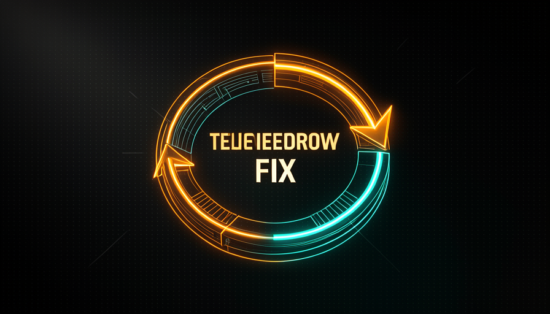
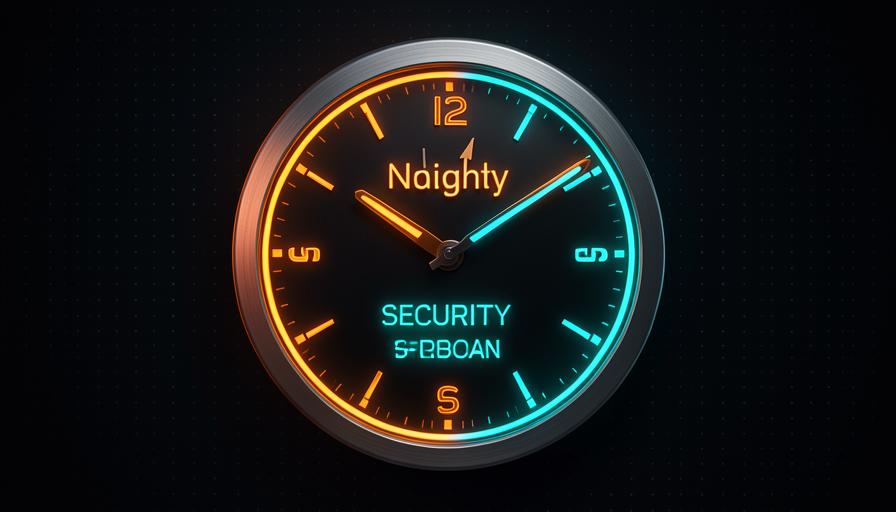

📖 Glosario vivo (lee antes — vuelve siempre que lo necesites)
Esta ruta ya da por sentado el vocabulario básico (modelo, agente, skill, AFK, sandbox, cola). Aquí están los términos nuevos de este módulo —fija estos:
💡 No necesitas el modelo caro
🧠 Imagínalo así: un detective mediocre en un barrio bien iluminado encuentra más delitos que un detective genial con los ojos vendados en una habitación oscura. No es solo talento — es estar en el lugar correcto, con la linterna adecuada. Encontrar un bug profundo es igual: el lugar y la luz (el harness) pesan tanto como el "CI" del modelo.
Existe un mito seductor: «si uso el modelo más inteligente (y más caro), encontrará esos bugs profundos que ningún otro encuentra». En la conversación, se contó que un modelo encontró bugs profundos y fallas de security que otros modelos no habían visto. La reacción fácil es: "¿ves? hace falta el modelo de primera". Pocock discrepa de raíz. En sus palabras: "podrías descubrir estos errores con modelos más baratos si buscaras en los lugares correctos y le dieras el prompt/harness adecuado". En otras palabras: lo que les faltaba a los «otros modelos» no era inteligencia, sino dirección.
Esto conecta directamente con lo que viste en la Ruta 1 (Economía de tokens): un harness bueno, deja que un modelo «más tonto» haga el mismo trabajo. Aquí la idea es la misma aplicada a la detección de defectos. En vez de pagar caro por un modelo genio que se ejecuta una vez, montas un sistema que coloca un modelo sencillo en el lugar adecuado, repetidamente. El porqué importa: un modelo caro es un costo que crece con cada llamada; un sistema bien dirigido es un activo que rinde todos los días. El error común es confundir «encontró un bug difícil» con «siempre necesito el modelo difícil», cuando lo que de verdad encontró el bug fue dónde e cómo miraste.
El secreto no está en el cerebro del modelo — está en dónde apuntas la linterna (el harness).

⚠️ Error común de principiante
Concluir que «necesito el modelo más caro para encontrar errores graves». Casi siempre el fallo estaba al alcance de un modelo barato; solo faltaba señalar él al lugar correcto, con el prompt correcto. Paga por el sistema, no por el cerebro.
En 1 frase: los bugs profundos se encuentran con el lugar adecuado + el prompt adecuado, no con el modelo más costoso.
Profundiza (opcional): ¿por qué el modelo barato basta aquí?
Encontrar un bug no exige razonar sobre todo el proyecto a la vez: exige mirar una parte pequeña y bien delimitada con una pregunta clara («¿esta función valida la entrada?»). Cuando reduces el alcance y das el prompt adecuado, el problema se vuelve lo bastante fácil para un modelo sencillo. Un modelo caro destaca en tareas grandes y ambiguas; revisar por partes es lo opuesto, así que ahorras sin perder calidad.
⏰ Cron de revisión de seguridad
🧠 Imagínalo así: un guardia que hace la ronda del edificio. No revisa los 30 pisos cada noche: lo haría mal. Revisa un piso por noche, con calma, y en un mes cubrió el edificio entero varias veces. El cron de revisión de seguridad es ese vigilante.
La receta concreta de Pocock: ejecuta un cron diario de security review que, cada día, revisa una parte nueva del repositorio, usando un modelo relativamente sencillo. La palabra clave es rotativo: no intentas revisar todo el proyecto de una vez (es caro, superficial y desborda la ventana de contexto). Lo divides en partes. Hoy, la carpeta de autenticación; mañana, la de pagos; después, la de cargas. En unas semanas se habrá auditado todo el repo — y el ciclo vuelve a empezar, revisando lo que cambió.
Por qué programado y no «cuando me acuerde»? Porque la lección que Pocock extrae de un incidente es directa: "¿qué aprendiste? Que hay problemas de seguridad en tu código: deberías tener algo que se ejecute y revise más cosas en el futuro." La seguridad no puede depender de tu memoria en un día ajetreado. El porqué del modelo simple: la revisión por partes es una tarea pequeña y bien delimitada, justo donde basta con el modelo barato (tema 1). El error común es configurar un cron que revise todo el repo de una vez: sale caro, genera ruido y nadie lee el informe enorme. Pequeño, diario, rotativo y práctico.
Abajo, el artefacto copiable: una línea de crontab que activa, todos los días a las 6 de la mañana, un agente headless de revisión de seguridad dirigido a la "parte del día". Pégalo en tu crontab (crontab -e) y ajusta la ruta del repo:
# Edite com: crontab -e
# Roda TODO DIA às 06:00 — checa uma fatia rotativa do repo (dia-do-mês % nº de pastas).
0 6 * * * cd /caminho/do/repo && DIRS=(auth payments uploads api db) && TARGET=${DIRS[$(( $(date +\%d) \% ${#DIRS[@]} ))]} && claude -p "Faça um SECURITY REVIEW so da pasta ./$TARGET. Liste cada falha (arquivo:linha), severidade (alta/media/baixa) e a correcao sugerida. Se nada grave, responda 'OK'. Saida em markdown." --model claude-haiku-4-5 --allowedTools "Read,Grep,Glob" >> ~/security-reviews/$(date +\%F)-$TARGET.md 2>&1
Recuperación rápida: ¿por qué el cron de security review revisa solo una parte por día?
En 1 frase: un guardia programado que revisa una sección por día cubre todo el edificio sin costar una fortuna.
📡 Telemetría → issue → fix
🧠 Imagínalo así: la alarma de humo de tu casa no solo suena: llama automáticamente a los bomberos, que ya llegan sabiendo en qué habitación está el problema. Telemetría → issue → fix es montar esa tubería: el error en producción activa una cadena que termina (casi) por sí sola en una corrección.
Aquí la automejora deja de ser proactiva (el cron) y se convierte en reactiva, pero automatizada. El ejemplo de Pocock: un bug de telemetría aparece en una herramienta como Sentry. En vez de leer, copiar y abrir un ticket a mano, el sistema crea un issue automáticamente y la marca con un label (etiqueta) tipo agent:explore. Esa label activa un agente: exactamente el patrón de cola del módulo 4.4.
El agente entonces devuelve datos estructurados: ¿se puede corregir de inmediato o hace falta una persona? Si es algo directo, lo implementa y abre el PR, y el flujo sigue hacia la revisión, eventualmente con una etiqueta de auto-merge (entra por sí solo) o un ping para que tú decidas. La frase que organiza todo esto es de Pocock: "acerca los puntos de control con participación humana lo más posible al resultado final." Es decir: la máquina recorre todo el camino; tú solo intervienes cerca de la meta, donde tu atención rinde más. El error común es dejar que el pipeline haga auto-merge de todo — sin ninguna instancia de control humana en los cambios que afectan el comportamiento, cambias trabajo manual por riesgo silencioso.
🔬 Ejemplo resuelto: del error en Sentry a la corrección
Escenario de punta a punta: uno TypeError intermitente en el checkout:
- Telemetría: Sentry agrupa 312 ocurrencias de
Cannot read 'total' of undefinedencheckout.ts. - Issue automática: un webhook crea el issue
#812con el stack trace y aplica la etiquetaagent:explore. - El agente explora: activado por la etiqueta, devuelve datos estructurados — causa: carrito vacío sin gestionar; dificultad: trivial; ¿se puede corregir AFK?: sí.
- Fix + PR: el agente agrega el guard
cart?.total ?? 0+ una prueba, abre el PR#813enlazando el issue. - Checkpoint al final: si modifica el comportamiento, NO hace auto-merge: te avisa, tú lo revisas en 30s y lo apruebas.
Solo apareciste en el paso 5: el checkpoint se desplazó para quedar cerca del resultado final.
En 1 frase: el error en producción activa por sí solo la cadena issue→agente→fix; tú solo decides cerca de la meta.
🔒 La causa raíz del bug
🧠 Imagínalo así: te robaron la bici. Compras otra bici. Te la vuelven a robar. Compras otra. La pregunta correcta no es «qué bici comprar» — es "¿por qué se puede robar? ¿Dónde está el candado?". Corregir el bug es comprar otra bicicleta. Encontrar la causa raíz es ponerle el candado.
Este es el cambio de perspectiva del módulo, y Pocock lo resume con una imagen que se queda grabada: "si alguien vive robándote la bici, quizá deberías comprar un candado." Corregir el bug que apareció es tratar el síntoma. La pregunta que realmente mejora el sistema es sobre la causa raíz (root cause): ¿por qué existió este bug tanto tiempo sin que te dieras cuenta? ¿Qué faltó en tu proceso — una prueba, una revisión, un lint — para que pasara inadvertido hasta convertirse en un incidente?
Fíjate en la diferencia de nivel. "Encontré un bug de security y lo corregí" se queda en la bici. "Hay fallas de security en mi código, así que voy a armar algo que se ejecuta y comprueba más en el futuro" instala el candado — es literalmente el cron del tema 2 naciendo de un incidente. Cada bug, en vez de ser solo una reparación, se convierte en una pregunta: qué baranda de protección del sistema dejó pasar esto? La respuesta se convierte en una suite de pruebas, una revisión automatizada o una refactorización. El error común es conformarte feliz con el fix: cierras el issue, sientes que lo resolviste y el mismo tipo de bug vuelve por otra vía, porque nunca compraste el candado.

Profundiza (opcional): los «5 porqués»
Una técnica clásica para llegar a la causa raíz es preguntar «¿por qué?» cinco veces. Bug en el checkout → ¿por qué? No se contempló el carrito vacío → ¿por qué? Nadie probó este caso → ¿por qué? No había una prueba para el carrito vacío → ¿por qué? La suite no cubre los casos límite → ¿por qué? No tenemos un cron/checklist que exija estos casos. En el quinto «porqué» ya no estás mirando el bug: estás mirando el sistema que lo dejó pasar. Es ahí donde se compra el candado.
En 1 frase: no compres otra bicicleta: pregunta por qué queda expuesta al robo e instala el candado.
♻️ Bucles de autom mejora
🧠 Imagínalo así: un gimnasio donde queda registrado cada entrenamiento y el registro ajusta el siguiente. No te haces más fuerte «gratis»: te haces más fuerte porque el sistema de entrenamiento aprende con cada sesión. Los ciclos de autom mejora son eso aplicado a tu código.
Al juntar todo: un sistema automejorable está hecho de varios bucles que se refuerzan. Pocock nombra tres ingredientes concretos: test suites (que detectan regresiones antes de que lleguen al usuario), revisiones humanas (que dan información útil sobre el sistema, no solo sobre el código) y refactor (que reducen la probabilidad de que aparezca el siguiente bug). Cada incidente alimenta estos ciclos: se convirtió en prueba, en checklist de revisión, en una parte más limpia del código.
El detalle crítico —y aquí se cruza con el módulo 4.4 (Loops × Filas)— es que «auto-mejorable» no significa "dejar un bucle infinito ejecutándose solo y desaparecer". Significa configurar activadores (cron, telemetría, etiqueta) que ponen tareas en una cola, y ciclos de feedback que hacen que cada pasada sea mejor que la anterior. Tú sigues al mando: priorizas, revisas los puntos peligrosos y ajustas los activadores. El error común es imaginar un sistema 100% autónomo que se arregla para siempre sin supervisión: eso no existe; lo que existe es un sistema que hace el trabajo repetitivo y te llama en los momentos que importan.
En 1 frase: detectar → corregir → prevenir → aprender, y cada vuelta deja el sistema más fuerte que la anterior.
🛠️ Revisar el sistema
🧠 Imagínalo así: una fábrica no solo inspecciona los productos que salen, también inspecciona la línea de montaje que los produce. Si la línea está torcida, todo producto sale torcido. Revisar solo el código es revisar los productos; revisar el sistema es enderezar la línea.
La tesis que cierra el módulo es la frase más importante de Pocock aquí: "revisa no solo el código: revisa también el SISTEMA que produce el código." En la era agéntica, quien escribe la mayor parte del código es el agente. Entonces tu enfoque de revisión sube un nivel: menos «¿esta línea está bien?» y más «¿el proceso que generó esta línea es confiable?". Los prompts, las skills, los crons, las gates de revisión: toda esta infraestructura, bien afinada, evita que nazca el próximo bug.
Esto también responde una pregunta peligrosa que aparece en el próximo módulo (4.6): "¿quién revisa a la IA que dice que todo está bien?" Respuesta: tú, revisando el sistema. Por eso vale la pena comprobar, de vez en cuando, algunos PRs que el agente aseguró que están bien — no por desconfianza paranoica, sino para mejorar el sistema con el tiempo. A continuación, el resumen práctico en forma de checklist que puedes copiar: ejecútalo siempre que se escape un bug, para convertir la corrección en una mejora del sistema:
Bug escapou? Antes de fechar a issue, COMPRE O CADEADO: [ ] CAUSA RAIZ — por que esse bug existiu tanto tempo sem ninguém notar? [ ] TESTE — adicionei um teste que pegaria esse caso na próxima vez? [ ] DETECÇÃO — meu cron de security/review olharia essa parte? Se não, ajusto o rodízio. [ ] PROCESSO — que gate (review, lint, label) deixou isso passar? Reforço ele. [ ] SISTEMA — revisei o código OU o sistema que produz o código? (era pra ser os dois) Se você só corrigiu o bug, comprou outra bike. Instale o cadeado.
Recuperación rápida: ¿qué significa «revisar el sistema que produce el código»?
En 1 frase: revisa no solo el código, sino también la línea de montaje que lo produce — es ahí donde el próximo bug muere antes de nacer.
🧾 Resumen del módulo
Próximo módulo:
4.6 — Checkpoints & review fluido: cómo hacer que el review sea sencillo, mover el checkpoint hacia la derecha y grabar un video+TTS del agente trabajando.